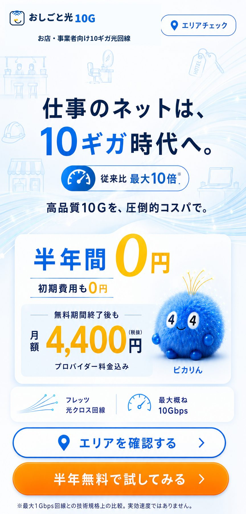
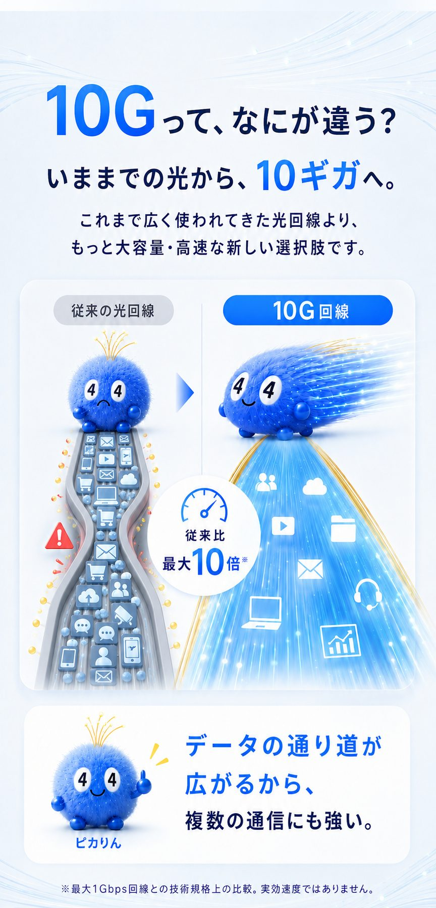
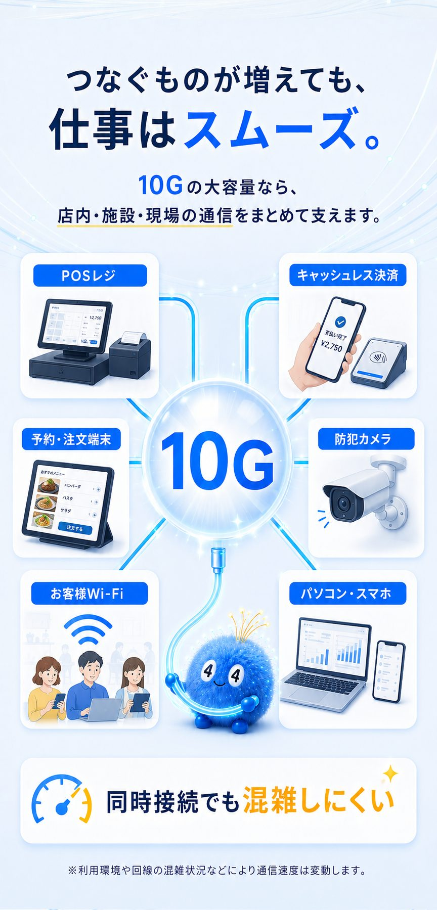
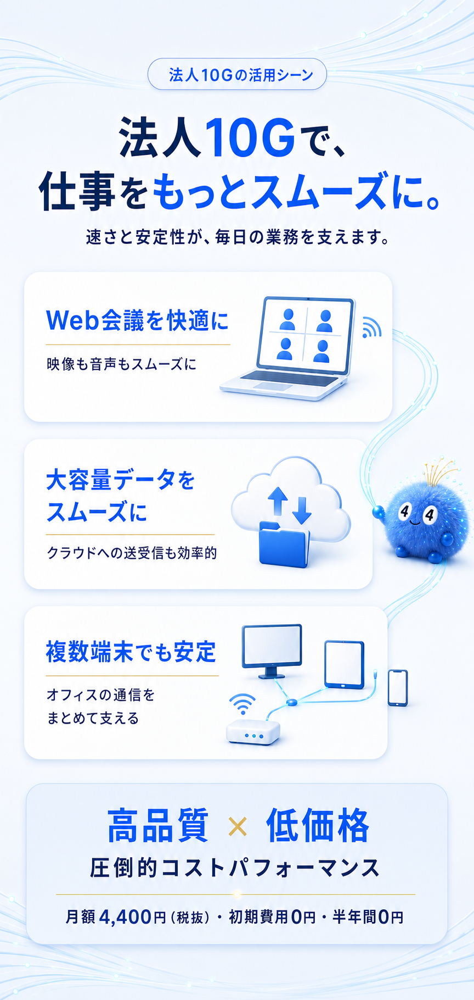
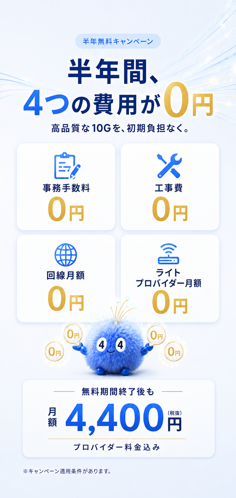
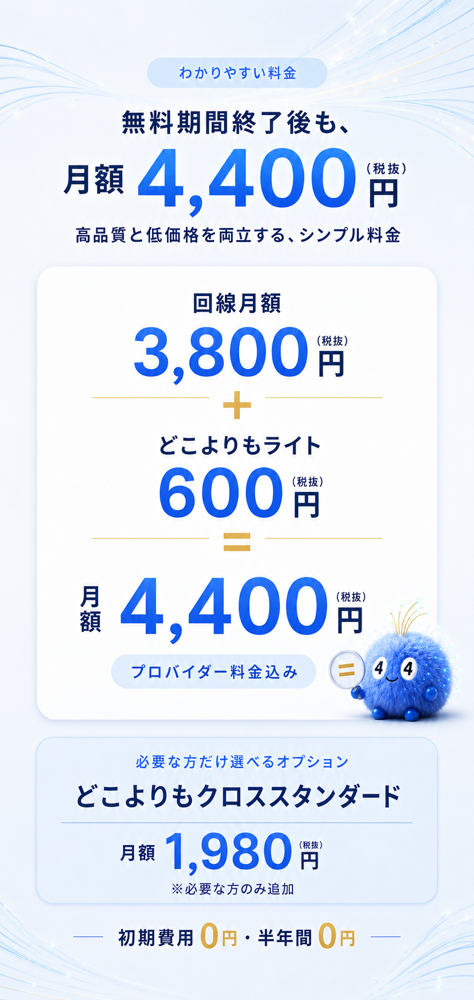
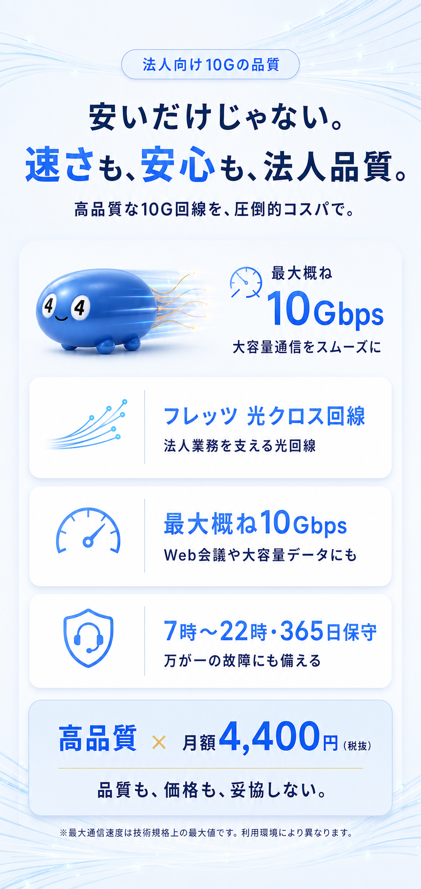
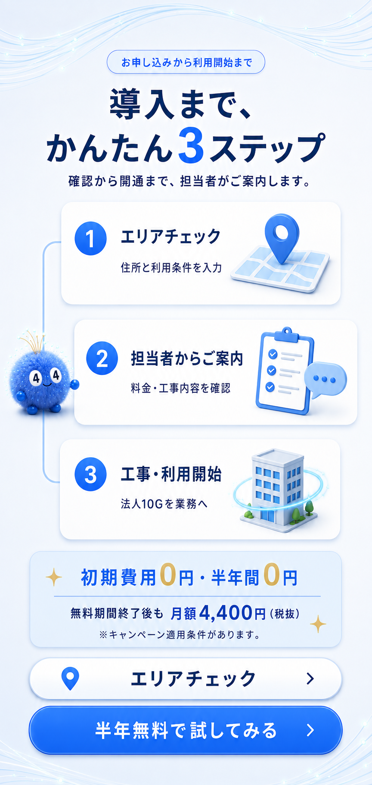
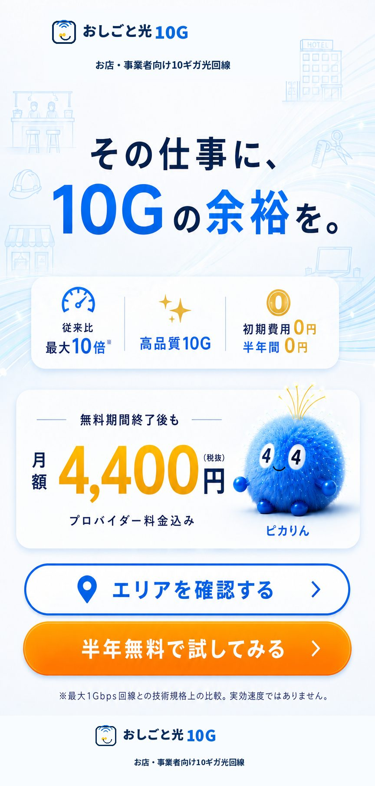

法人・店舗のインターネット環境に
法人向け10ギガ光回線で、
店舗Wi-Fiをもっと快適に。
店舗や事業所のインターネットを高速・大容量化。POSレジ、キャッシュレス決済、防犯カメラ、Web会議、お客様用Wi-Fiなど、仕事で使う複数端末の通信をまとめて支えます。







法人光回線・料金について
おしごと光10Gの、
よくあるご質問。
店舗のインターネット・Wi-Fi導入前に、よくある疑問をまとめました。
半年間、本当に0円ですか？
キャンペーン条件を満たす場合、回線月額とライトのプロバイダー月額が6か月間0円です。
初期費用も0円ですか？
キャンペーン条件を満たす場合、事務手数料800円（税抜）と工事費20,000円（税抜）が0円になります。
無料期間終了後はいくらですか？
回線月額3,800円とライトのプロバイダー月額600円で、合計月額4,400円（税抜）です。
法人や個人事業主でも申し込めますか？
法人、店舗、事業所、個人事業主など、仕事でインターネット回線を利用する方を対象としています。
その他14件の質問を見る追加の質問を閉じる
店舗のインターネット回線として使えますか？
POSレジ、キャッシュレス決済、予約端末、防犯カメラ、業務用パソコンなど、店舗のさまざまな通信に利用できます。
お客様用Wi-Fiにも利用できますか？
対応するWi-Fi機器と環境を整えることで、店舗や施設のお客様用Wi-Fiにも活用できます。
どの業種でも利用できますか？
飲食、小売、理美容、宿泊、建設、個人事業、小規模オフィスなど、幅広い業種で利用できます。
どの地域でも使えますか？
提供エリアがあります。導入予定の住所を入力して無料で確認できます。
必ず10Gbpsの速度が出ますか？
10Gbpsは技術規格上の最大値です。利用環境、端末、配線、混雑状況などにより実効速度は変動します。
10ギガ対応のWi-Fiルーターは必要ですか？
10ギガの性能を活かすには、対応ルーター、LANケーブル、端末などの環境が必要です。必要な機器は導入時に確認してください。
開通工事にはどのくらいかかりますか？
建物の設備状況や提供エリアにより異なります。エリア確認後に工事内容と開通までの目安をご案内します。
Web会議やクラウド業務にも向いていますか？
Web会議、大容量ファイルの送受信、クラウドサービス、複数端末の同時接続など、法人のインターネット業務に活用できます。
複数店舗で導入できますか？
複数店舗や複数事業所への導入も相談できます。提供可否は各住所ごとに確認します。
プロバイダー料金は別途かかりますか？
月額4,400円（税抜）には、ライトのプロバイダー月額600円（税抜）が含まれています。
現在の光回線から乗り換えできますか？
現在の契約内容や建物設備により手続きが異なります。無料相談で利用中の回線状況をお知らせください。
固定IPアドレスは利用できますか？
必要なネットワーク構成やオプションを確認したうえで個別にご案内します。
導入前に相談できますか？
エリア確認、料金、工事内容、店舗や事業所に合うネットワーク環境について無料で相談できます。
申し込みには何が必要ですか？
導入予定住所、会社名または屋号、ご担当者名、電話番号、メールアドレス、業種をご入力ください。詳細は担当者からご案内します。
✦ 初期費用 0円・半年間 0円 ✦
※キャンペーンには適用条件があります。
入力は約30秒
導入先が10G対応か、
すぐに確認できます。
導入予定の住所を入力してください。
提供可否の確認後、結果をご案内します。
入力内容はエリア判定のために使用します。半年間0円
半年無料キャンペーンを
まずは無料で相談。
物件・店舗・事業所に合う導入方法をご案内します。
